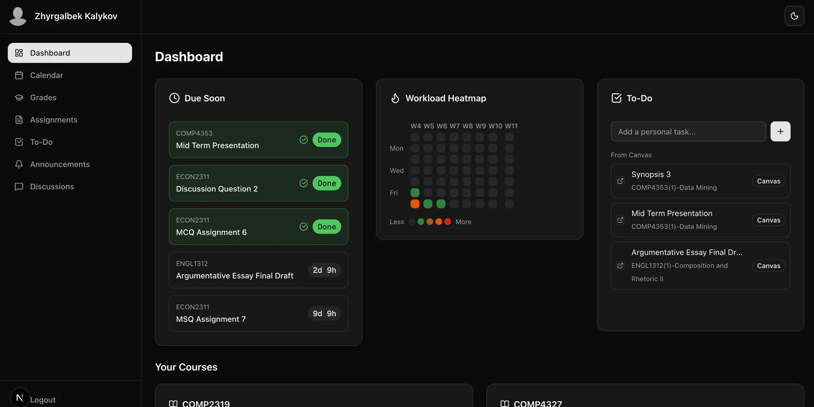

Ecosystem
Canvas Dashboard.
A unified dashboard for Canvas LMS that brings everything a student needs into one clean interface.

Features
- Unified Calendar All assignments and events in one view
- Grades Overview Current grades across all courses
- Upcoming Assignments Prioritized list of what's due
- Assignment Details Descriptions, files, and rubrics
- Workload Heatmap Visualize busy weeks ahead with semester labels
- Due Date Countdowns Never miss a deadline
- To-Do List Canvas + personal tasks (persisted)
- Announcements Feed All course announcements
- Discussion Tracker Stay on top of discussions
- Dark Mode Easy on the eyes